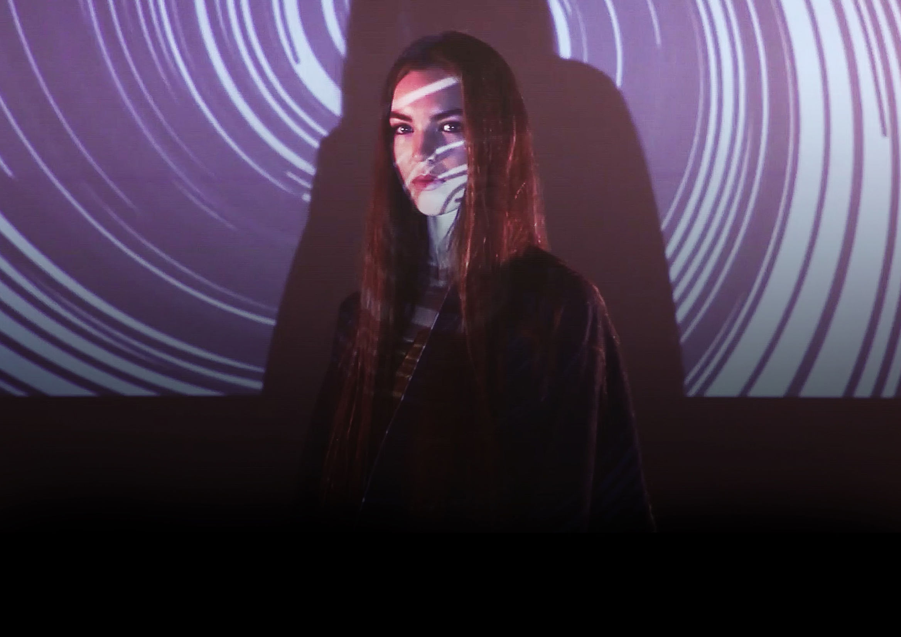
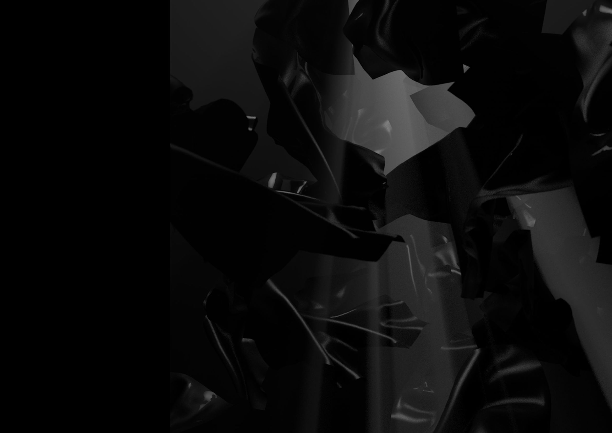
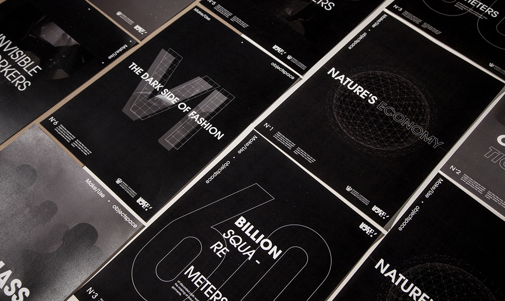
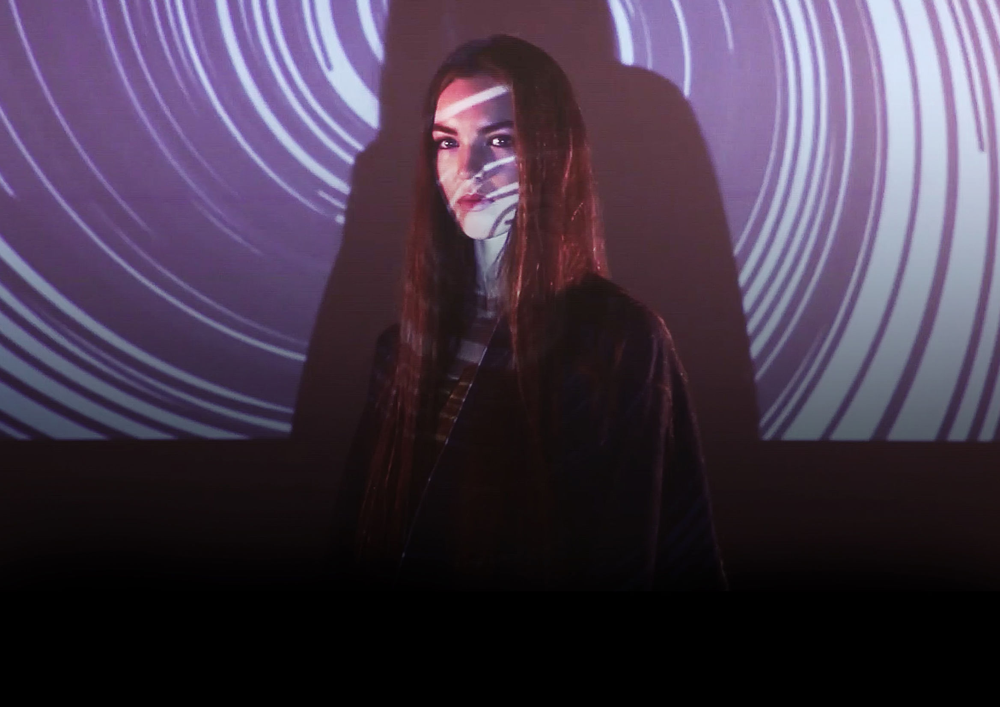
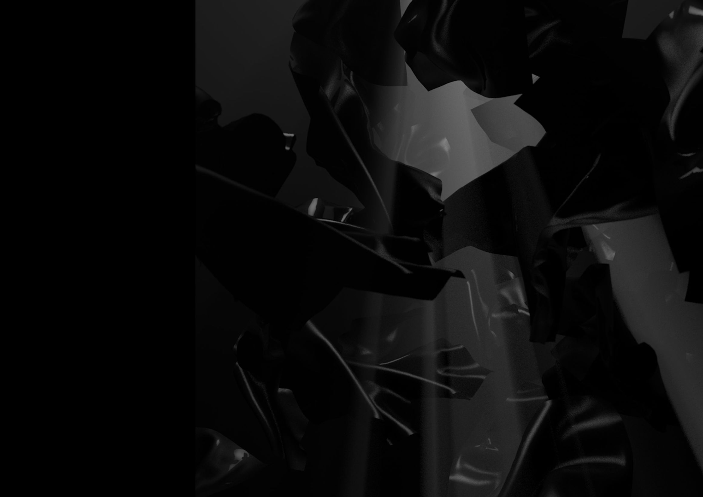
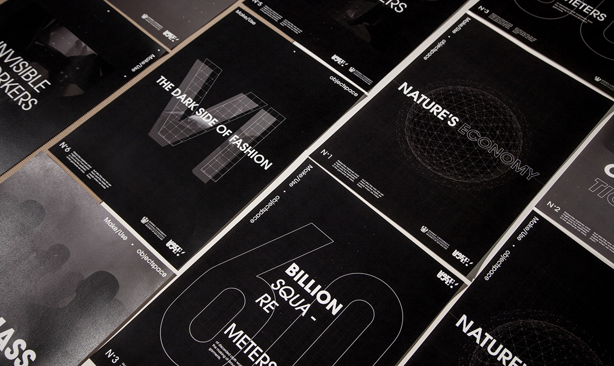

In our video The Dark Side of Fashion we responded to the brief from client Make Use to “Persuade fashionistas to buy zero waste fashion”. Analysing our target audience we found them to be highly influenced by clothing, we therefore needed to make sure our video would change their behavior in how they view zero waste clothing as just another purchase. We decided to educate our audience on the dark side of fashion to the environment and change their behavior towards fashion consumption. In our video we emphasized this impact by exploring a dystopia vs utopia relationship. Focusing on the corruption and negative of popular fashion in the dystopia. We then transitioned into the utopia through revealing the make use clothing as a solution to a more sustainable future.
 




